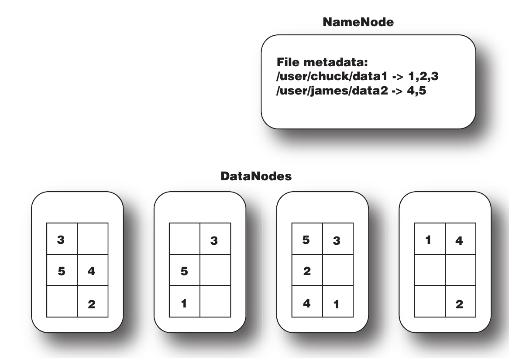
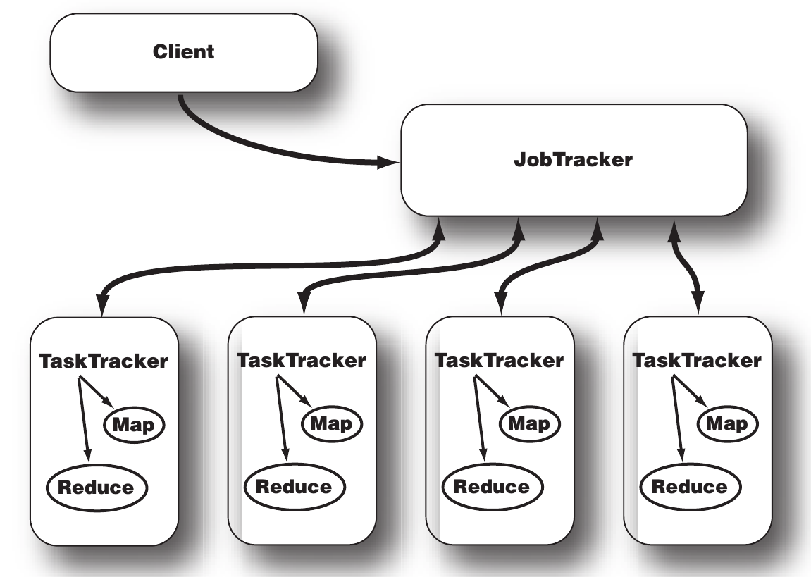
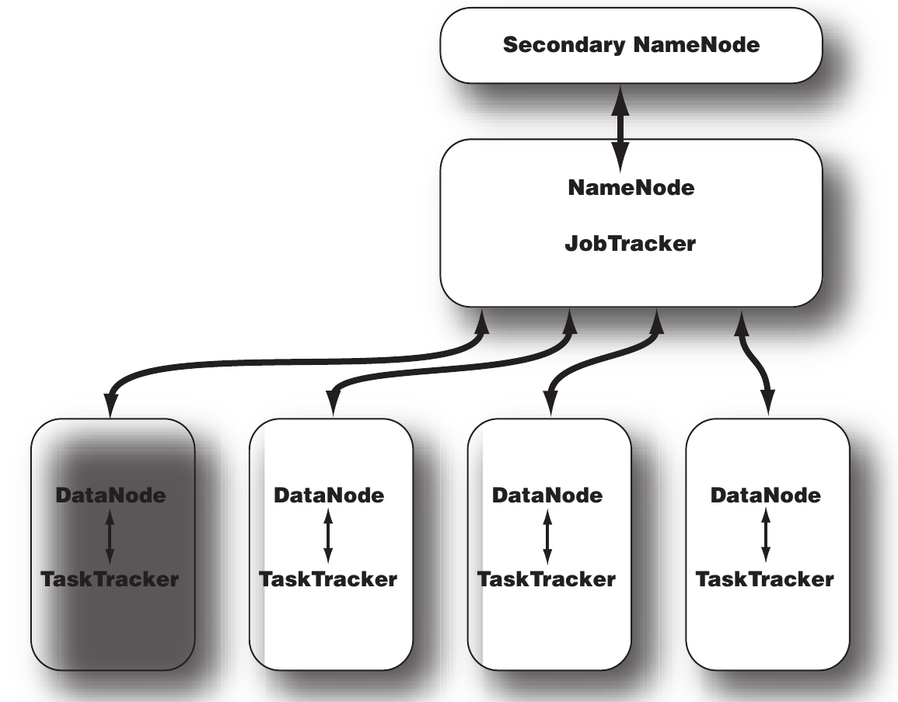
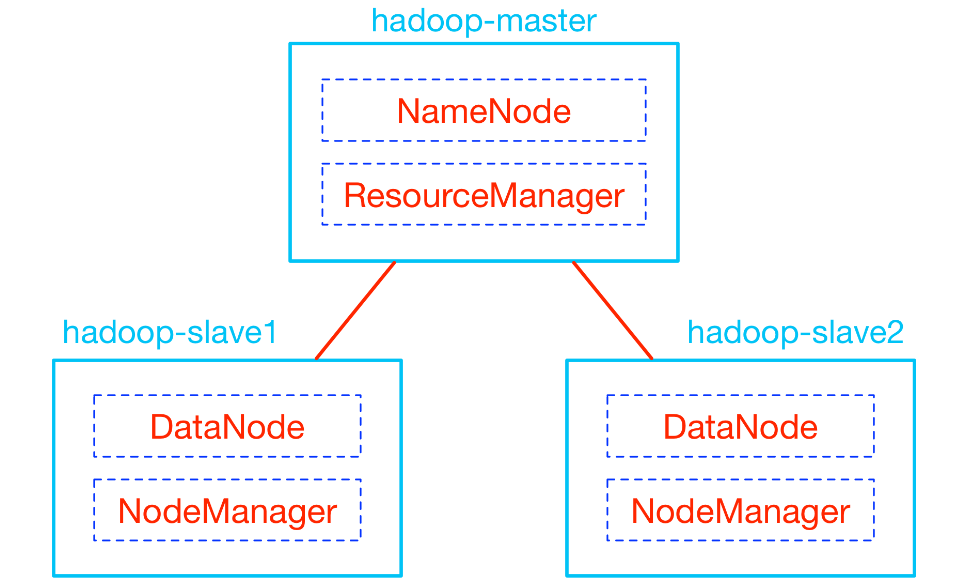
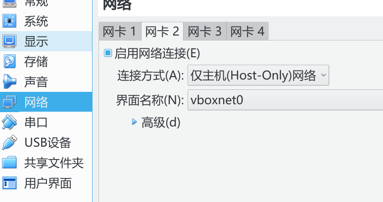
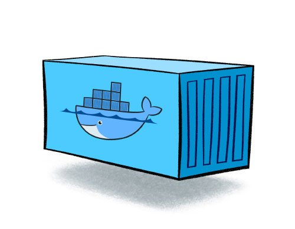
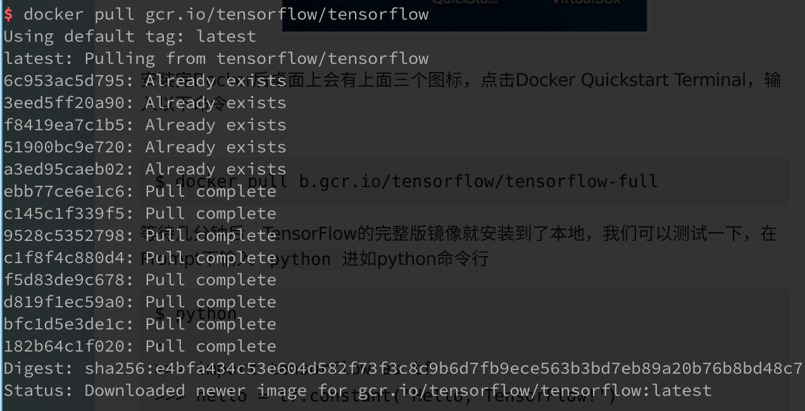
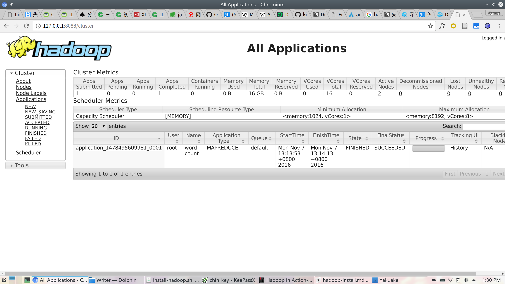
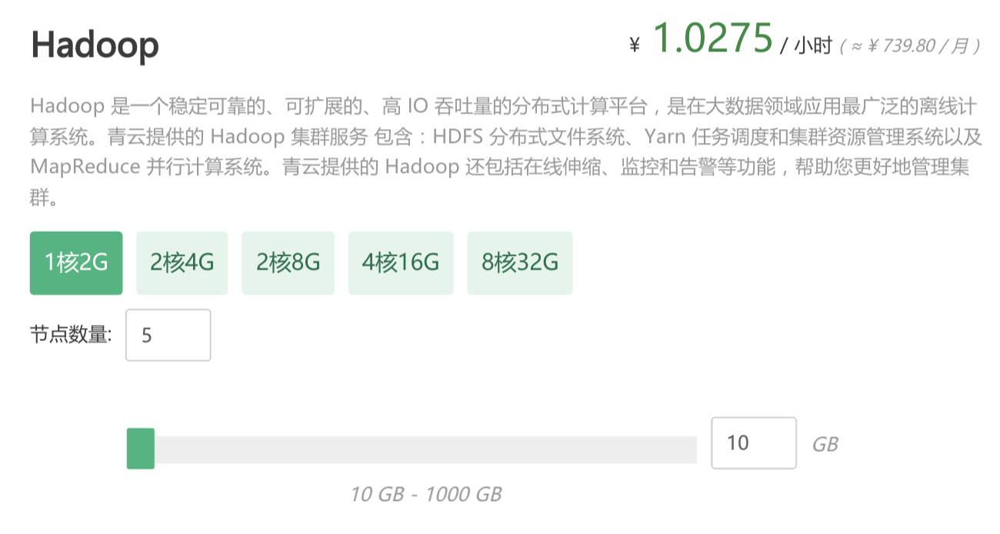

The building blocks of Hadoop
- NameNode
- DataNode
- Secondary NameNode
- ~~JobTracker~~
- ~~TaskTracker~~
- ResourceManager
- NodeManager


NameNode
NameNode主要是用来保存HDFS的元数据信息，比如命名空间信息，块信息等。当它运行的时候，这些信息是存在内存中的。但是这些信息也可以持久化到磁盘上。没有Namenode，HDFS就不能工作。事实上，如果运行namenode的机器坏掉的话，系统中的文件将会完全丢失，因为没有其他方法能够将位于不同datanode上的文件块(blocks)重建文件。因此，Hadoop存在单点故障。为了解决单点故障，Hadoop提供了两套机制：
- 第一种方式是将持久化存 储在本地硬盘的文件系统元数据备份。Hadoop可以通过配置来让Namenode将他的持久化状态文件写到不同的文件系统中。一般是镜像到网络文件系统或单独的磁盘中。
- 第二种方式是运行一个辅助的Namenode(Secondary Namenode)。下面会具体说明。
DataNode
Datanode是文件系统的工作节点，他们根据客户端或者是namenode的调度存储和检索数据，并且定期向namenode发送他们所存储的块(block)的列表。
集群中的每个服务器都运 行一个DataNode后台程序，这个后台程序负责把HDFS数据块读写到本地的文件系统。当需要通过客户端读/写某个 数据时，先由NameNode告诉客户端去哪个DataNode进行具体的读/写操作，然后，客户端直接与这个DataNode服务器上的后台程序进行通信，并且对相关的数据块进行读/写操作。
数据会以多个副本的形式存在于多个DataNode中。因此，DataNode不存在单点故障。

Secondary NameNode
~~Secondary NameNode不是NameNode的备份。它是一个用来监控HDFS状态的辅助后台程序。Secondary NameNode不同于NameNode，它不接受或者记录任何实时的数据变化，但是，它会与NameNode进行通信，周期性的合并fsimage和edits日志，保持edits文件大小在一个限定的范围内，并定期地保存HDFS元数据的快照。~~
SNN的作用 现在 （Hadoop2.x）可以被两个节点替换CheckpointNode和BackupNode。 CheckpointNode可以理解为与Secondary NameNode的作用一致。 BackupNode：NameNode的完全备份。
JobTracker & TaskTracker
JobTracker后台程序用来连接应用程序与Hadoop。用户代码提交到集群以后，由JobTracker决定哪个文件将被处理，并且为不同的task分配节点。同时，它还监控所有的task，一旦某个task失败了，JobTracker就会自动重新开启这个task。
TaskTracker与负责存储数据的DataNode相结合，其处理结构上也遵循主/从架构。JobTracker位于主节点，统领 MapReduce工作；而TaskTrackers位于从节点，独立管理各自的task。每个TaskTracker负责独立执行具体的task，而 JobTracker负责分配task。虽然每个从节点仅有一个唯一的一个TaskTracker，但是每个TaskTracker可以产生多个java 虚拟机（JVM），用于并行处理多个map以及reduce任务。TaskTracker的一个重要职责就是与JobTracker交互。如果 JobTracker无法准时地获取TaskTracker提交的信息，JobTracker就判定TaskTracker已经崩溃，并将任务分配给其他 节点处理。


ResourceManager & NodeManager
- ResourceManager：负责整个集群的资源管理和调度，将各个资源部分（计算、内存、带宽等）精心安排给基础 NodeManager（YARN 的每节点代理）
- 处理客户端请求
- 启动或监控ApplicationMaster
- 监控NodeManager
- 资源的分配与调度
- ApplicationMaster：负责应用程序相关事务，比如任务调度、任务监控和容错等，负责协调来自 ResourceManager 的资源，并通过 NodeManager 监视容器的执行和资源使用（CPU、内存等的资源分配）
- 负责数据的切分
- 为应用程序申请资源并分配给内部的任务
- 任务的监控与容错
- NodeManager： NodeManager管理YARN集群中的每个节点。NodeManager 提供针对集群中每个节点的服务，从监督对一个容器的终生管理到监视资源和跟踪节点健康。
- 管理单个节点上的资源
- 处理来自ResourceManager的命令
- 处理来自ApplicationMaster的命令
Hadoop的master和slave分别运行在不同的服务器中，其中hadoop-master中运行NameNode和ResourceManager，hadoop-slave中运行DataNode和NodeManager。NameNode和DataNode是Hadoop分布式文件系统HDFS的组件，负责储存输入以及输出数据，而ResourceManager和NodeManager是Hadoop集群资源管理系统YARN的组件，负责CPU和内存资源的调度。

Running Hadoop
Local (standalone) mode
With empty configuration files, Hadoop will run completely on the local machine.Because there’s no need to communicate with other nodes, the standalone mode doesn't use HDFS, nor will it launch any of the Hadoop daemons.
Pseudo-distributed mode
running Hadoop in a “cluster of one” with all daemons running on a single machine.
Fully distributed mode
- master—The master node of the cluster and host of the NameNode and Job-Tracker daemons
- backup—The server that hosts the Secondary NameNode daemon
- hadoop1, hadoop2, hadoop3, ...—The slave boxes of the cluster running both DataNode and TaskTracker daemons
About Java
Version 2.7 and later of Apache Hadoop requires Java 7. It is built and tested on both OpenJDK and Oracle (HotSpot)'s JDK/JRE. Earlier versions (2.6 and earlier) support Java 6.
OpenJDK has been used to qualify Hadoop 2.2 -and the rest of the Hortonworks bundle- on RHEL6. No problems were noted.
基于虚拟机搭建Hadoop集群
基于平台：Ubuntu server 16.04
准备虚拟机
使用Virtualbox安装ubuntu，为了便于多虚拟机之间、宿主机与虚拟机之间连接，增加一张使用Host-only的虚拟网卡。

手动安装教程
参见 https://www.digitalocean.com/community/tutorials/how-to-install-hadoop-in-stand-alone-mode-on-ubuntu-16-04
单节点脚本安装
使用以下脚本安装，脚本测试过的环境为ubuntu server 16.04。
https://github.com/chih7/hadoop_install
分布式运行
直接从单机安装的virtualbox虚拟机clone了两台一样的机器，确保ip如脚本配置：
MASTER_IP="192.168.56.101" SLAVE_IP1="192.168.56.102" SLAVE_IP2="192.168.56.103"
进入了hadoop-master的/root目录，直接运行start-hadoop.sh脚本即可。
基于Docker搭建Hadoop集群
标准的交付件

优势
- 存储驱动-层叠镜像模型
- 以应用为中心的云计算新模式-以容器为标准交付件
- 版本控制-对接代码仓库，自动化测试和构建

安装过程
3节点Hadoop集群搭建步骤
pull docker image
sudo docker pull kiwenlau/hadoop:1.0
clone github repository
git clone https://github.com/kiwenlau/hadoop-cluster-docker
create hadoop network
sudo docker network create --driver=bridge hadoop
start container
cd hadoop-cluster-docker
sudo ./start-container.sh
output:
start hadoop-master container...
start hadoop-slave1 container...
start hadoop-slave2 container...
root@hadoop-master:~#
- start 3 containers with 1 master and 2 slaves
- you will get into the /root directory of hadoop-master container
$ docker info
Containers: 3
Running: 3
Paused: 0
Stopped: 0
Images: 1
...
查看docker的运行信息，可以看到基于一个镜像，运行了三个容器实例。
$ sudo du -chs ./docker/
1.7G ./docker/
1.7G total
查看整个docker集群的磁盘占用，全部只有3.3GB，可见基于层叠镜像模型，docker大大减少了磁盘占用。
start hadoop
./start-hadoop.sh
run wordcount
./run-wordcount.sh
output
input file1.txt:
Hello Hadoop
input file2.txt:
Hello Docker
wordcount output:
Docker 1
Hadoop 1
Hello 2
Hadoop网页管理地址:
- NameNode: http://127.0.0.1:50070/
- ResourceManager: http://127.0.0.1:8088/
127.0.0.1为运行容器的主机的IP。

N节点Hadoop集群搭建步骤
先准备3节点Hadoop集群
重新构建Docker镜像
sudo ./resize-cluster.sh 5
- 指定任意N，增加slaves节点的数量
启动Docker容器
sudo ./start-container.sh 5
- 与第2步中的N保持一致。
参考： https://github.com/kiwenlau/hadoop-cluster-docker
Docker集群
- Kubernetes
- Docker Swarm
基于云的hadoop集群
青云
https://www.qingcloud.com/hadoop
价格

Azure中国
https://www.azure.cn/home/features/hdinsight/
国内首家100%基于 Apache Hadoop 的云服务
- 按需扩展至 PB 级别
- 处理非结构化和半结构化数据
- 在 Java、.NET 等环境中开发
- 无需购买和维护硬件
- 仅为您使用的服务付费
- 在几分钟内创建 Hadoop 群集
- 在 Excel 中直观呈现您的 Hadoop 数据
- 轻松集成本地 Hadoop 群集
价格
| 实例 | 内核数 | 内存数 | 磁盘大小 | 每节点价格 |
|---|---|---|---|---|
| A1 | 1 | 1.75GB | 70GB | ￥0.51 /小时（约合￥379.44 /月） |
| A2 | 2 | 3.5GB | 135GB | ￥1.01 /小时（约合￥751.44 /月） |
| A3 | 4 | 7GB | 285GB | ￥2.03 /小时（约合￥1,510.32 /月） |
| A4 | 8 | 14GB | 605GB | ￥4.05 /小时（约合￥3,013.20 /月） |
AWS中国
https://aws.amazon.com/cn/elasticmapreduce/
Amazon EMR 简化了大数据的处理，提供的托管 Hadoop 框架可以让您轻松、快速、经济高效地在多个动态可扩展的 Amazon EC2 实例之间分发和处理大量数据。您还可以运行其他常用的分发框架（例如 Amazon EMR 中的 Spark 和 Presto）与其他 AWS 数据存储服务（例如 Amazon S3 和 Amazon DynamoDB）中的数据进行互动。
Comments
comments powered by Disqus